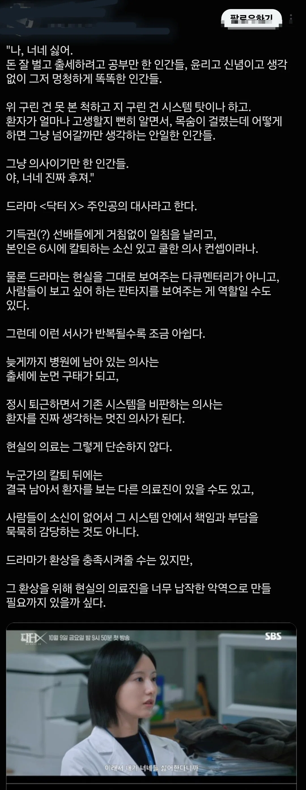

저번주 첫방하고 2회만에 14.9% 시청률을 기록하여
이슈되고 있는 김지원 주연의 닥터X
드라마 주인공설정이 '의료파업으로 인한 의료공백에
대처하기 위해 급하게 고용된 용역의사'임 (각색된 설정)
원작이 2012년 작품이고 에피를 거의 그대로 가져와서
의료관련 내용은 판타지 허구라고 이미 제작진이 설명함
한국정서에 맞게 각색되면서 드라마 내에서 꽤나
직접적으로 의사들의 간호사 무시 , 수술실 CCTV법제화
환자 병원뺑뺑이 문제 , 의료파업으로 인한 환자들의 피해 등
의료계 비판 내용이 나옴
의료관련 내용은 판타지 허구라고 이미 제작진이 설명함
그럼 자문을 받았네 어쩌네 개소리를 안했으면 됐을텐데 어그로는 다끌어놓고 판타지임 이래봐야...